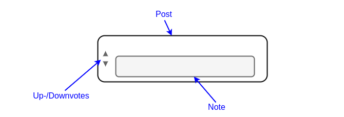
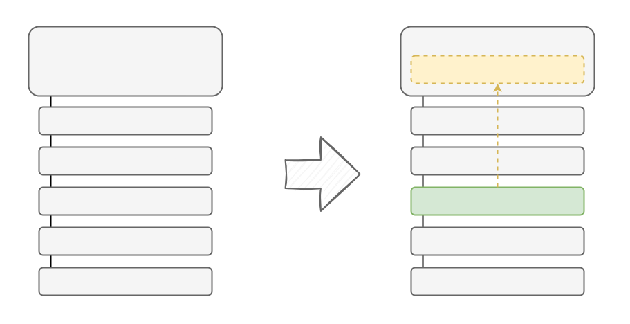

1 Objectives and Goals
Before we go into the details of how the Global Brain algorithm evaluates and curates information, let’s look at how users can contribute information and interact with the system. There are three fundamental elements:
- Posts: A piece of media submitted to the platform by a user, just like posts on any other social media platforms. Posts can either be top-level posts or replies to other posts, thus forming conversation threads.
- Notes: A post’s note is a reply that is shown alongside it to provide helpful context.
- Votes: Users evaluate content through upvotes and downvotes.

The Global Brain algorithm’s core objective is to maximize the impact of the best ideas and arguments by finding the best reply for any post and promoting it to be its note.

1.1 Rationale
Humans lie and humans pass on misinformation, whether inadvertantly or with the goal to manipulate others. No algorithm will ever change this. However, misinformation is harmful in social networks only when it is unchecked. Lies are only harmful if people don’t see the refutations. In fact, given that lies and misinformation will always be part of any online information eco-system, seeing lies along with rebuttals might actually be useful because people would have seen them anyways and thus become aware of the lies currently in circulation.
The engagement-based algorithms in today’s social networks encourage the unchecked spread of rumors1, regardless of how well they are supported, whereas the Global Brain algorithm discourages the spread of information that people are unlikely to upvote if they were fully informed, and encourages the spread of information that might check the spread of a false information that is already spreading.
And yet the purpose of the Global Brain algorithm is NOT to tell people what is true. It is simply to direct people’s attention to information that may change their votes.
But why do we want to change votes? An algorithm that tries to change minds sounds sinister. Propaganda changes how people vote. But propaganda works by selectively exposing users to information with the goal of changing opinions about specific things, all the while actively omitting contrary information. It is one sided and dishonest. The Global Brain, on the other hand, has no agenda other than driving productive conversation and reducing cognitive dissonance.
The Global Brain algorithm drives a fair, unbiased process of weighing all the arguments that anyone cares to make. As long as there is sufficient intellectual diversity among recipients, the result is an adversarial process, where all the relevant information (the posts that change minds in either direction) is exposed and processed (the marketplace of ideas).
1.2 An Informal Argument Model
You may have noticed that we have used the term “best” above without qualifying it. We want to find the “best” reply to any post to make it its note – the most helpful context shown alongside it. But “best” is a tricky term in the realm of arguments and ideas. What makes an argument “best”? And how do we even know what an argument is if everything is just a post?
Many attempts have been made to formalize debate by creating formal models of claims, propositions, arguments, and other constituents of debate. [TODO: ADD LINKS] We deviate from this approach and propose an informal argument model.
The Global Brain does not require a formal model of belief. It doesn’t need posts to be structured as formal propositions or claims. It doesn’t need to know if users agree or disagree with posts.
The only assumptions are:
- A vote reflects a users intent to give a post more/less attention (see The Law of Attention).
- This intent is caused by underlying beliefs that we cannot observe (latent variables – see section below).
By making these assumptions about the causal relationship between beliefs and votes and then watching how exposure to notes causes changes to votes, we can model underlying beliefs and predict how exposure to a note will cause changes to these beliefs, which will cause changes to other beliefs, and so on.
with the exception, perhaps, of X’s Community Notes↩︎